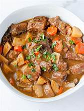

This one is some strange stew I made on accident once when I
was putting things in a pot and hoping it worked out
This isn't what it looks like but I don't have any photos of it

ingredients:
- carrots, celery, bacon, and ground pork
- chicken broth (a bunch)
- ramen
- eggs
- a big pot and a big stew
- various condiments and spices
how 2 make
- I want you to put the broth in the pot. like halfway full
- next you must boil said broth. maybe salt it and add other spices
- ok now cut the bacon and put it in. do the same with the veggies after
boiling the bacon for a bit. you dont want them to get too soft
-
alright at this point put the noodles in there and crack the egg into it.
cook it kinda hot
- ok add more spices now.
Congrats!! eat it
click here to return